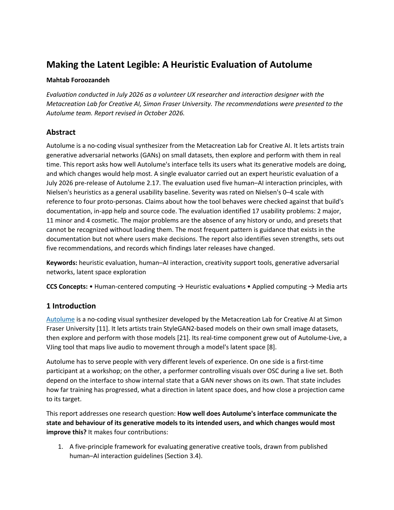
Making the Latent Legible: A Heuristic Evaluation of Autolume Mahtab Foroozandeh Evaluation conducted in July 2026 as a volunteer UX researcher and interaction designer with the Metacreation Lab for Creative AI, Simon Fraser University. The recommendations were presented to the Autolume team. Report revised in October 2026. Abstract Autolume is a no-coding visual synthesizer from the Metacreation Lab for Creative AI. It lets artists train generative adversarial networks (GANs) on small datasets, then explore and perform with them in real time. This report asks how well Autolume's interface tells its users what its generative models are doing, and which changes would help most. A single evaluator carried out an expert heuristic evaluation of a July 2026 pre-release of Autolume 2.17. The evaluation used five human–AI interaction principles, with Nielsen's heuristics as a general usability baseline. Severity was rated on Nielsen's 0–4 scale with reference to four proto-personas. Claims about how the tool behaves were checked against that build's documentation, in-app help and source code. The evaluation identified 17 usability problems: 2 major, 11 minor and 4 cosmetic. The major problems are the absence of any history or undo, and presets that cannot be recognized without loading them. The most frequent pattern is guidance that exists in the documentation but not where users make decisions. The report also identifies seven strengths, sets out five recommendations, and records which findings later releases have changed. Keywords: heuristic evaluation, human–AI interaction, creativity support tools, generative adversarial networks, latent space exploration CCS Concepts: • Human-centered computing → Heuristic evaluations • Applied computing → Media arts 1 Introduction Autolume is a no-coding visual synthesizer developed by the Metacreation Lab for Creative AI at Simon Fraser University [11]. It lets artists train StyleGAN2-based models on their own small image datasets, then explore and perform with those models [21]. Its real-time component grew out of Autolume-Live, a VJing tool that maps live audio to movement through a model's latent space [8]. Autolume has to serve people with very different levels of experience. On one side is a first-time participant at a workshop; on the other, a performer controlling visuals over OSC during a live set. Both depend on the interface to show internal state that a GAN never shows on its own. That state includes how far training has progressed, what a direction in latent space does, and how close a projection came to its target. This report addresses one research question: How well does Autolume's interface communicate the state and behaviour of its generative models to its intended users, and which changes would most improve this? It makes four contributions: 1. A five-principle framework for evaluating generative creative tools, drawn from published human–AI interaction guidelines (Section 3.4).
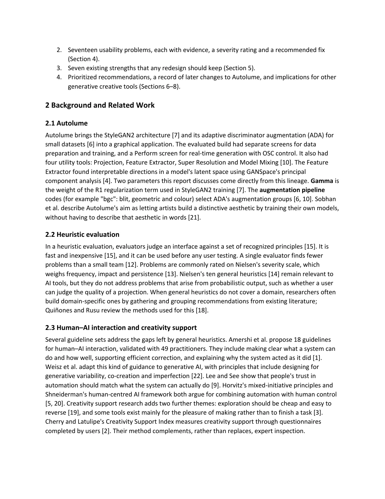
2. Seventeen usability problems, each with evidence, a severity rating and a recommended fix (Section 4). 3. Seven existing strengths that any redesign should keep (Section 5). 4. Prioritized recommendations, a record of later changes to Autolume, and implications for other generative creative tools (Sections 6–8). 2 Background and Related Work 2.1 Autolume Autolume brings the StyleGAN2 architecture [7] and its adaptive discriminator augmentation (ADA) for small datasets [6] into a graphical application. The evaluated build had separate screens for data preparation and training, and a Perform screen for real-time generation with OSC control. It also had four utility tools: Projection, Feature Extractor, Super Resolution and Model Mixing [10]. The Feature Extractor found interpretable directions in a model's latent space using GANSpace's principal component analysis [4]. Two parameters this report discusses come directly from this lineage. Gamma is the weight of the R1 regularization term used in StyleGAN2 training [7]. The augmentation pipeline codes (for example "bgc": blit, geometric and colour) select ADA's augmentation groups [6, 10]. Sobhan et al. describe Autolume's aim as letting artists build a distinctive aesthetic by training their own models, without having to describe that aesthetic in words [21]. 2.2 Heuristic evaluation In a heuristic evaluation, evaluators judge an interface against a set of recognized principles [15]. It is fast and inexpensive [15], and it can be used before any user testing. A single evaluator finds fewer problems than a small team [12]. Problems are commonly rated on Nielsen's severity scale, which weighs frequency, impact and persistence [13]. Nielsen's ten general heuristics [14] remain relevant to AI tools, but they do not address problems that arise from probabilistic output, such as whether a user can judge the quality of a projection. When general heuristics do not cover a domain, researchers often build domain-specific ones by gathering and grouping recommendations from existing literature; Quiñones and Rusu review the methods used for this [18]. 2.3 Human–AI interaction and creativity support Several guideline sets address the gaps left by general heuristics. Amershi et al. propose 18 guidelines for human–AI interaction, validated with 49 practitioners. They include making clear what a system can do and how well, supporting efficient correction, and explaining why the system acted as it did [1]. Weisz et al. adapt this kind of guidance to generative AI, with principles that include designing for generative variability, co-creation and imperfection [22]. Lee and See show that people's trust in automation should match what the system can actually do [9]. Horvitz's mixed-initiative principles and Shneiderman's human-centred AI framework both argue for combining automation with human control [5, 20]. Creativity support research adds two further themes: exploration should be cheap and easy to reverse [19], and some tools exist mainly for the pleasure of making rather than to finish a task [3]. Cherry and Latulipe's Creativity Support Index measures creativity support through questionnaires completed by users [2]. Their method complements, rather than replaces, expert inspection.
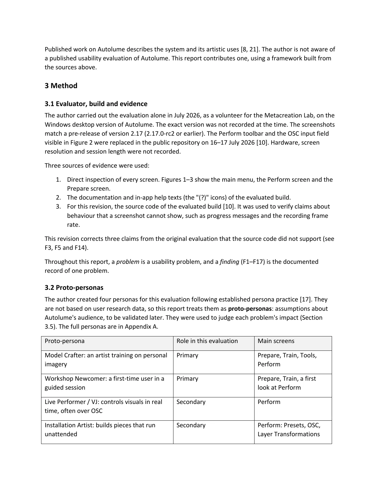
Published work on Autolume describes the system and its artistic uses [8, 21]. The author is not aware of a published usability evaluation of Autolume. This report contributes one, using a framework built from the sources above. 3 Method 3.1 Evaluator, build and evidence The author carried out the evaluation alone in July 2026, as a volunteer for the Metacreation Lab, on the Windows desktop version of Autolume. The exact version was not recorded at the time. The screenshots match a pre-release of version 2.17 (2.17.0-rc2 or earlier). The Perform toolbar and the OSC input field visible in Figure 2 were replaced in the public repository on 16–17 July 2026 [10]. Hardware, screen resolution and session length were not recorded. Three sources of evidence were used: 1. Direct inspection of every screen. Figures 1–3 show the main menu, the Perform screen and the Prepare screen. 2. The documentation and in-app help texts (the "(?)" icons) of the evaluated build. 3. For this revision, the source code of the evaluated build [10]. It was used to verify claims about behaviour that a screenshot cannot show, such as progress messages and the recording frame rate. This revision corrects three claims from the original evaluation that the source code did not support (see F3, F5 and F14). Throughout this report, a problem is a usability problem, and a finding (F1–F17) is the documented record of one problem. 3.2 Proto-personas The author created four personas for this evaluation following established persona practice [17]. They are not based on user research data, so this report treats them as proto-personas: assumptions about Autolume's audience, to be validated later. They were used to judge each problem's impact (Section 3.5). The full personas are in Appendix A. Proto-persona Role in this evaluation Main screens Model Crafter: an artist training on personal Primary Prepare, Train, Tools, imagery Perform Workshop Newcomer: a first-time user in a Primary Prepare, Train, a first guided session look at Perform Live Performer / VJ: controls visuals in real Secondary Perform time, often over OSC Installation Artist: builds pieces that run Secondary Perform: Presets, OSC, unattended Layer Transformations
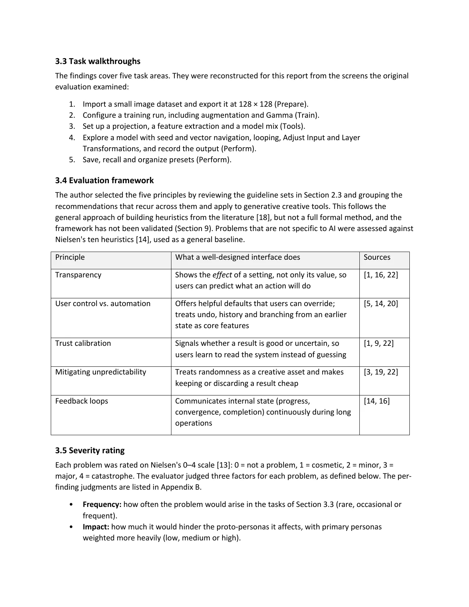
3.3 Task walkthroughs The findings cover five task areas. They were reconstructed for this report from the screens the original evaluation examined: 1. Import a small image dataset and export it at 128 × 128 (Prepare). 2. Configure a training run, including augmentation and Gamma (Train). 3. Set up a projection, a feature extraction and a model mix (Tools). 4. Explore a model with seed and vector navigation, looping, Adjust Input and Layer Transformations, and record the output (Perform). 5. Save, recall and organize presets (Perform). 3.4 Evaluation framework The author selected the five principles by reviewing the guideline sets in Section 2.3 and grouping the recommendations that recur across them and apply to generative creative tools. This follows the general approach of building heuristics from the literature [18], but not a full formal method, and the framework has not been validated (Section 9). Problems that are not specific to AI were assessed against Nielsen's ten heuristics [14], used as a general baseline. Principle What a well-designed interface does Sources Transparency Shows the effect of a setting, not only its value, so [1, 16, 22] users can predict what an action will do User control vs. automation Offers helpful defaults that users can override; [5, 14, 20] treats undo, history and branching from an earlier state as core features Trust calibration Signals whether a result is good or uncertain, so [1, 9, 22] users learn to read the system instead of guessing Mitigating unpredictability Treats randomness as a creative asset and makes [3, 19, 22] keeping or discarding a result cheap Feedback loops Communicates internal state (progress, [14, 16] convergence, completion) continuously during long operations 3.5 Severity rating Each problem was rated on Nielsen's 0–4 scale [13]: 0 = not a problem, 1 = cosmetic, 2 = minor, 3 = major, 4 = catastrophe. The evaluator judged three factors for each problem, as defined below. The per- finding judgments are listed in Appendix B. • Frequency: how often the problem would arise in the tasks of Section 3.3 (rare, occasional or frequent). • Impact: how much it would hinder the proto-personas it affects, with primary personas weighted more heavily (low, medium or high).
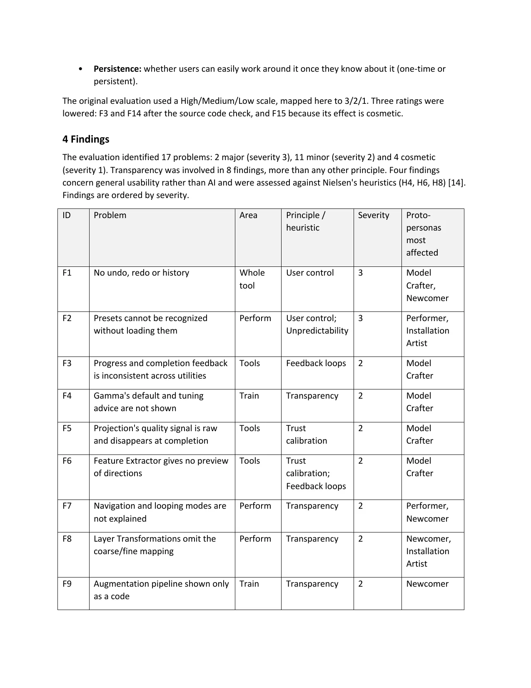
• Persistence: whether users can easily work around it once they know about it (one-time or persistent). The original evaluation used a High/Medium/Low scale, mapped here to 3/2/1. Three ratings were lowered: F3 and F14 after the source code check, and F15 because its effect is cosmetic. 4 Findings The evaluation identified 17 problems: 2 major (severity 3), 11 minor (severity 2) and 4 cosmetic (severity 1). Transparency was involved in 8 findings, more than any other principle. Four findings concern general usability rather than AI and were assessed against Nielsen's heuristics (H4, H6, H8) [14]. Findings are ordered by severity. ID Problem Area Principle / Severity Proto- heuristic personas most affected F1 No undo, redo or history Whole User control 3 Model tool Crafter, Newcomer F2 Presets cannot be recognized Perform User control; 3 Performer, without loading them Unpredictability Installation Artist F3 Progress and completion feedback Tools Feedback loops 2 Model is inconsistent across utilities Crafter F4 Gamma's default and tuning Train Transparency 2 Model advice are not shown Crafter F5 Projection's quality signal is raw Tools Trust 2 Model and disappears at completion calibration Crafter F6 Feature Extractor gives no preview Tools Trust 2 Model of directions calibration; Crafter Feedback loops F7 Navigation and looping modes are Perform Transparency 2 Performer, not explained Newcomer F8 Layer Transformations omit the Perform Transparency 2 Newcomer, coarse/fine mapping Installation Artist F9 Augmentation pipeline shown only Train Transparency 2 Newcomer as a code
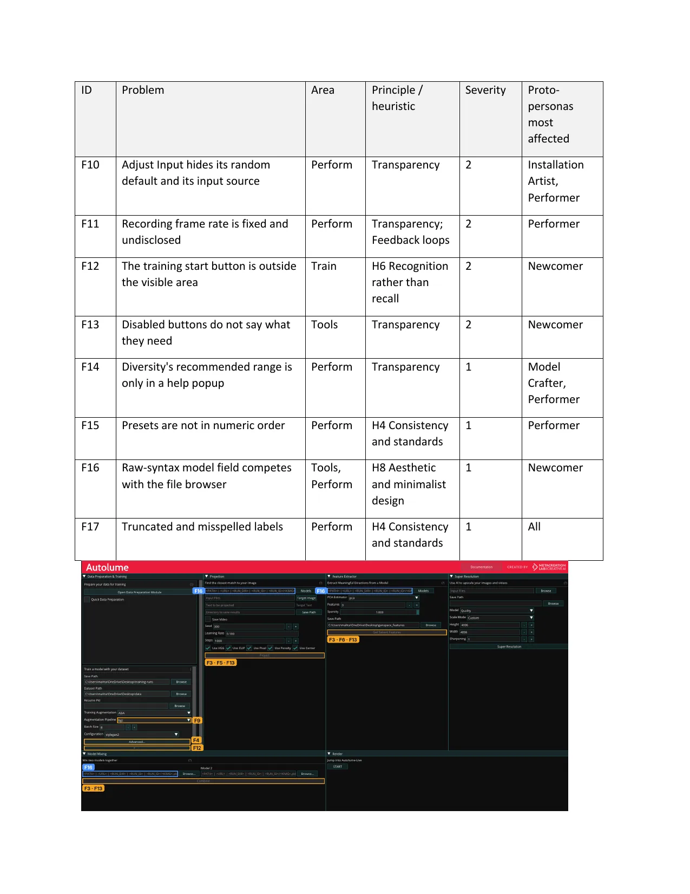
ID Problem Area Principle / Severity Proto- heuristic personas most affected F10 Adjust Input hides its random Perform Transparency 2 Installation default and its input source Artist, Performer F11 Recording frame rate is fixed and Perform Transparency; 2 Performer undisclosed Feedback loops F12 The training start button is outside Train H6 Recognition 2 Newcomer the visible area rather than recall F13 Disabled buttons do not say what Tools Transparency 2 Newcomer they need F14 Diversity's recommended range is Perform Transparency 1 Model only in a help popup Crafter, Performer F15 Presets are not in numeric order Perform H4 Consistency 1 Performer and standards F16 Raw-syntax model field competes Tools, H8 Aesthetic 1 Newcomer with the file browser Perform and minimalist design F17 Truncated and misspelled labels Perform H4 Consistency 1 All and standards
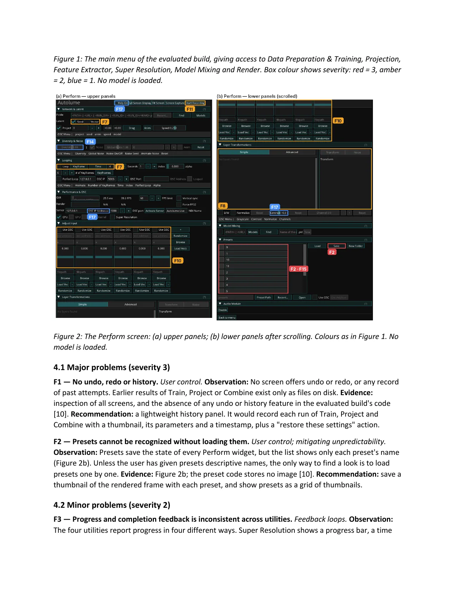
Figure 1: The main menu of the evaluated build, giving access to Data Preparation & Training, Projection, Feature Extractor, Super Resolution, Model Mixing and Render. Box colour shows severity: red = 3, amber = 2, blue = 1. No model is loaded. Figure 2: The Perform screen: (a) upper panels; (b) lower panels after scrolling. Colours as in Figure 1. No model is loaded. 4.1 Major problems (severity 3) F1 — No undo, redo or history. User control. Observation: No screen offers undo or redo, or any record of past attempts. Earlier results of Train, Project or Combine exist only as files on disk. Evidence: inspection of all screens, and the absence of any undo or history feature in the evaluated build's code [10]. Recommendation: a lightweight history panel. It would record each run of Train, Project and Combine with a thumbnail, its parameters and a timestamp, plus a "restore these settings" action. F2 — Presets cannot be recognized without loading them. User control; mitigating unpredictability. Observation: Presets save the state of every Perform widget, but the list shows only each preset's name (Figure 2b). Unless the user has given presets descriptive names, the only way to find a look is to load presets one by one. Evidence: Figure 2b; the preset code stores no image [10]. Recommendation: save a thumbnail of the rendered frame with each preset, and show presets as a grid of thumbnails. 4.2 Minor problems (severity 2) F3 — Progress and completion feedback is inconsistent across utilities. Feedback loops. Observation: The four utilities report progress in four different ways. Super Resolution shows a progress bar, a time
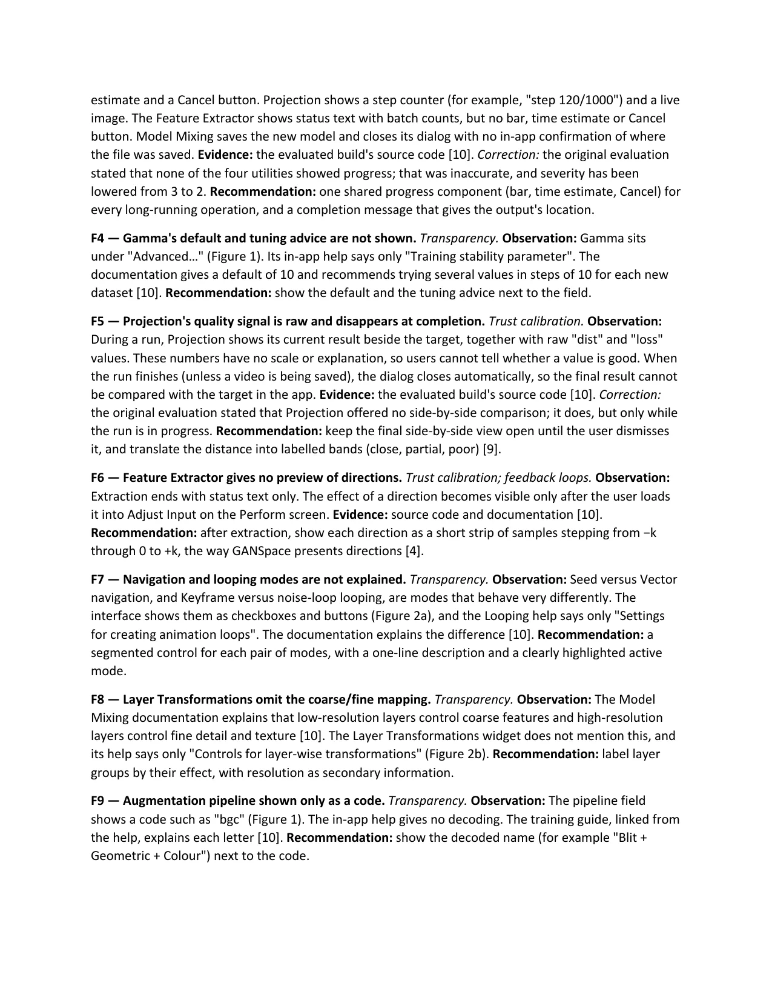
estimate and a Cancel button. Projection shows a step counter (for example, "step 120/1000") and a live image. The Feature Extractor shows status text with batch counts, but no bar, time estimate or Cancel button. Model Mixing saves the new model and closes its dialog with no in-app confirmation of where the file was saved. Evidence: the evaluated build's source code [10]. Correction: the original evaluation stated that none of the four utilities showed progress; that was inaccurate, and severity has been lowered from 3 to 2. Recommendation: one shared progress component (bar, time estimate, Cancel) for every long-running operation, and a completion message that gives the output's location. F4 — Gamma's default and tuning advice are not shown. Transparency. Observation: Gamma sits under "Advanced…" (Figure 1). Its in-app help says only "Training stability parameter". The documentation gives a default of 10 and recommends trying several values in steps of 10 for each new dataset [10]. Recommendation: show the default and the tuning advice next to the field. F5 — Projection's quality signal is raw and disappears at completion. Trust calibration. Observation: During a run, Projection shows its current result beside the target, together with raw "dist" and "loss" values. These numbers have no scale or explanation, so users cannot tell whether a value is good. When the run finishes (unless a video is being saved), the dialog closes automatically, so the final result cannot be compared with the target in the app. Evidence: the evaluated build's source code [10]. Correction: the original evaluation stated that Projection offered no side-by-side comparison; it does, but only while the run is in progress. Recommendation: keep the final side-by-side view open until the user dismisses it, and translate the distance into labelled bands (close, partial, poor) [9]. F6 — Feature Extractor gives no preview of directions. Trust calibration; feedback loops. Observation: Extraction ends with status text only. The effect of a direction becomes visible only after the user loads it into Adjust Input on the Perform screen. Evidence: source code and documentation [10]. Recommendation: after extraction, show each direction as a short strip of samples stepping from −k through 0 to +k, the way GANSpace presents directions [4]. F7 — Navigation and looping modes are not explained. Transparency. Observation: Seed versus Vector navigation, and Keyframe versus noise-loop looping, are modes that behave very differently. The interface shows them as checkboxes and buttons (Figure 2a), and the Looping help says only "Settings for creating animation loops". The documentation explains the difference [10]. Recommendation: a segmented control for each pair of modes, with a one-line description and a clearly highlighted active mode. F8 — Layer Transformations omit the coarse/fine mapping. Transparency. Observation: The Model Mixing documentation explains that low-resolution layers control coarse features and high-resolution layers control fine detail and texture [10]. The Layer Transformations widget does not mention this, and its help says only "Controls for layer-wise transformations" (Figure 2b). Recommendation: label layer groups by their effect, with resolution as secondary information. F9 — Augmentation pipeline shown only as a code. Transparency. Observation: The pipeline field shows a code such as "bgc" (Figure 1). The in-app help gives no decoding. The training guide, linked from the help, explains each letter [10]. Recommendation: show the decoded name (for example "Blit + Geometric + Colour") next to the code.
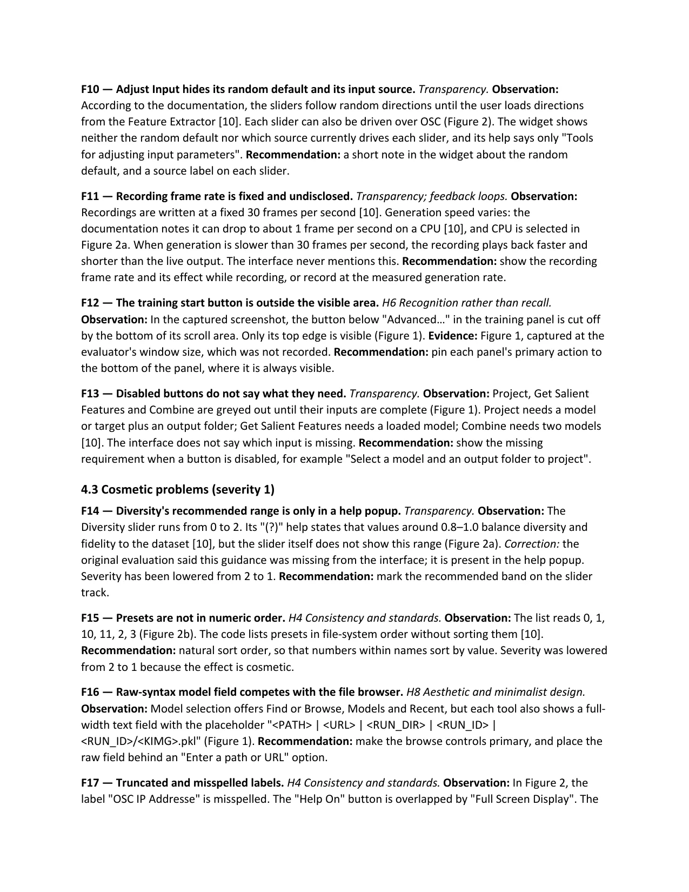
F10 — Adjust Input hides its random default and its input source. Transparency. Observation: According to the documentation, the sliders follow random directions until the user loads directions from the Feature Extractor [10]. Each slider can also be driven over OSC (Figure 2). The widget shows neither the random default nor which source currently drives each slider, and its help says only "Tools for adjusting input parameters". Recommendation: a short note in the widget about the random default, and a source label on each slider. F11 — Recording frame rate is fixed and undisclosed. Transparency; feedback loops. Observation: Recordings are written at a fixed 30 frames per second [10]. Generation speed varies: the documentation notes it can drop to about 1 frame per second on a CPU [10], and CPU is selected in Figure 2a. When generation is slower than 30 frames per second, the recording plays back faster and shorter than the live output. The interface never mentions this. Recommendation: show the recording frame rate and its effect while recording, or record at the measured generation rate. F12 — The training start button is outside the visible area. H6 Recognition rather than recall. Observation: In the captured screenshot, the button below "Advanced…" in the training panel is cut off by the bottom of its scroll area. Only its top edge is visible (Figure 1). Evidence: Figure 1, captured at the evaluator's window size, which was not recorded. Recommendation: pin each panel's primary action to the bottom of the panel, where it is always visible. F13 — Disabled buttons do not say what they need. Transparency. Observation: Project, Get Salient Features and Combine are greyed out until their inputs are complete (Figure 1). Project needs a model or target plus an output folder; Get Salient Features needs a loaded model; Combine needs two models [10]. The interface does not say which input is missing. Recommendation: show the missing requirement when a button is disabled, for example "Select a model and an output folder to project". 4.3 Cosmetic problems (severity 1) F14 — Diversity's recommended range is only in a help popup. Transparency. Observation: The Diversity slider runs from 0 to 2. Its "(?)" help states that values around 0.8–1.0 balance diversity and fidelity to the dataset [10], but the slider itself does not show this range (Figure 2a). Correction: the original evaluation said this guidance was missing from the interface; it is present in the help popup. Severity has been lowered from 2 to 1. Recommendation: mark the recommended band on the slider track. F15 — Presets are not in numeric order. H4 Consistency and standards. Observation: The list reads 0, 1, 10, 11, 2, 3 (Figure 2b). The code lists presets in file-system order without sorting them [10]. Recommendation: natural sort order, so that numbers within names sort by value. Severity was lowered from 2 to 1 because the effect is cosmetic. F16 — Raw-syntax model field competes with the file browser. H8 Aesthetic and minimalist design. Observation: Model selection offers Find or Browse, Models and Recent, but each tool also shows a full- width text field with the placeholder "<PATH> | <URL> | <RUN_DIR> | <RUN_ID> | <RUN_ID>/<KIMG>.pkl" (Figure 1). Recommendation: make the browse controls primary, and place the raw field behind an "Enter a path or URL" option. F17 — Truncated and misspelled labels. H4 Consistency and standards. Observation: In Figure 2, the label "OSC IP Addresse" is misspelled. The "Help On" button is overlapped by "Full Screen Display". The
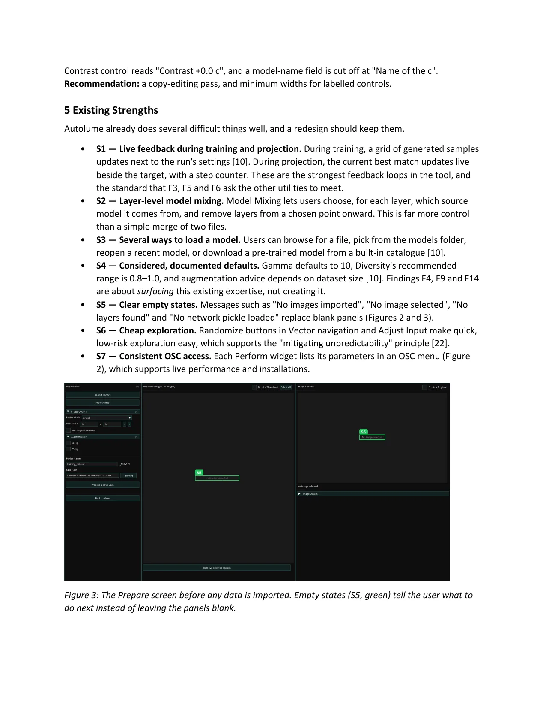
Contrast control reads "Contrast +0.0 c", and a model-name field is cut off at "Name of the c". Recommendation: a copy-editing pass, and minimum widths for labelled controls. 5 Existing Strengths Autolume already does several difficult things well, and a redesign should keep them. • S1 — Live feedback during training and projection. During training, a grid of generated samples updates next to the run's settings [10]. During projection, the current best match updates live beside the target, with a step counter. These are the strongest feedback loops in the tool, and the standard that F3, F5 and F6 ask the other utilities to meet. • S2 — Layer-level model mixing. Model Mixing lets users choose, for each layer, which source model it comes from, and remove layers from a chosen point onward. This is far more control than a simple merge of two files. • S3 — Several ways to load a model. Users can browse for a file, pick from the models folder, reopen a recent model, or download a pre-trained model from a built-in catalogue [10]. • S4 — Considered, documented defaults. Gamma defaults to 10, Diversity's recommended range is 0.8–1.0, and augmentation advice depends on dataset size [10]. Findings F4, F9 and F14 are about surfacing this existing expertise, not creating it. • S5 — Clear empty states. Messages such as "No images imported", "No image selected", "No layers found" and "No network pickle loaded" replace blank panels (Figures 2 and 3). • S6 — Cheap exploration. Randomize buttons in Vector navigation and Adjust Input make quick, low-risk exploration easy, which supports the "mitigating unpredictability" principle [22]. • S7 — Consistent OSC access. Each Perform widget lists its parameters in an OSC menu (Figure 2), which supports live performance and installations. Figure 3: The Prepare screen before any data is imported. Empty states (S5, green) tell the user what to do next instead of leaving the panels blank.
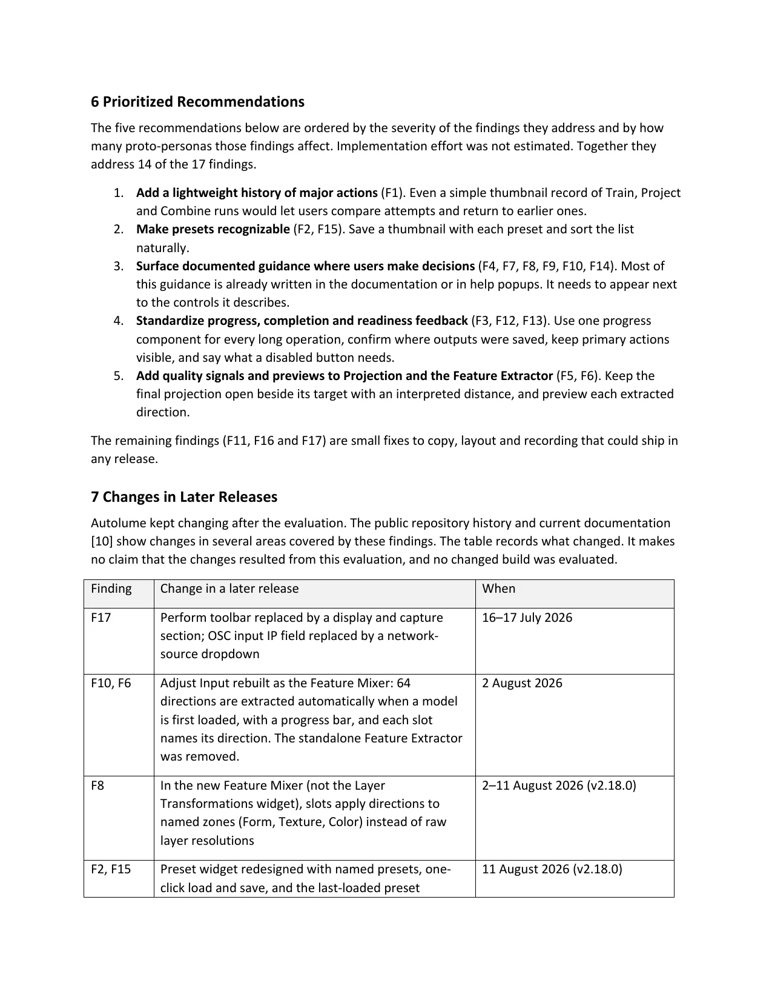
6 Prioritized Recommendations The five recommendations below are ordered by the severity of the findings they address and by how many proto-personas those findings affect. Implementation effort was not estimated. Together they address 14 of the 17 findings. 1. Add a lightweight history of major actions (F1). Even a simple thumbnail record of Train, Project and Combine runs would let users compare attempts and return to earlier ones. 2. Make presets recognizable (F2, F15). Save a thumbnail with each preset and sort the list naturally. 3. Surface documented guidance where users make decisions (F4, F7, F8, F9, F10, F14). Most of this guidance is already written in the documentation or in help popups. It needs to appear next to the controls it describes. 4. Standardize progress, completion and readiness feedback (F3, F12, F13). Use one progress component for every long operation, confirm where outputs were saved, keep primary actions visible, and say what a disabled button needs. 5. Add quality signals and previews to Projection and the Feature Extractor (F5, F6). Keep the final projection open beside its target with an interpreted distance, and preview each extracted direction. The remaining findings (F11, F16 and F17) are small fixes to copy, layout and recording that could ship in any release. 7 Changes in Later Releases Autolume kept changing after the evaluation. The public repository history and current documentation [10] show changes in several areas covered by these findings. The table records what changed. It makes no claim that the changes resulted from this evaluation, and no changed build was evaluated. Finding Change in a later release When F17 Perform toolbar replaced by a display and capture 16–17 July 2026 section; OSC input IP field replaced by a network- source dropdown F10, F6 Adjust Input rebuilt as the Feature Mixer: 64 2 August 2026 directions are extracted automatically when a model is first loaded, with a progress bar, and each slot names its direction. The standalone Feature Extractor was removed. F8 In the new Feature Mixer (not the Layer 2–11 August 2026 (v2.18.0) Transformations widget), slots apply directions to named zones (Form, Texture, Color) instead of raw layer resolutions F2, F15 Preset widget redesigned with named presets, one- 11 August 2026 (v2.18.0) click load and save, and the last-loaded preset
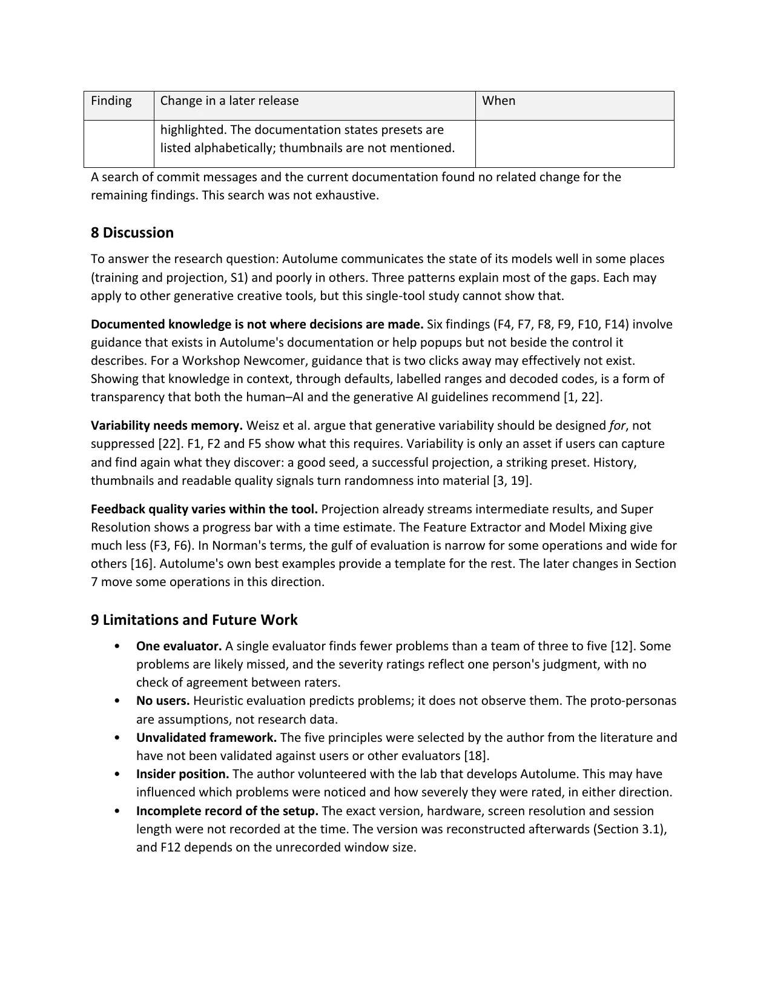
Finding Change in a later release When highlighted. The documentation states presets are listed alphabetically; thumbnails are not mentioned. A search of commit messages and the current documentation found no related change for the remaining findings. This search was not exhaustive. 8 Discussion To answer the research question: Autolume communicates the state of its models well in some places (training and projection, S1) and poorly in others. Three patterns explain most of the gaps. Each may apply to other generative creative tools, but this single-tool study cannot show that. Documented knowledge is not where decisions are made. Six findings (F4, F7, F8, F9, F10, F14) involve guidance that exists in Autolume's documentation or help popups but not beside the control it describes. For a Workshop Newcomer, guidance that is two clicks away may effectively not exist. Showing that knowledge in context, through defaults, labelled ranges and decoded codes, is a form of transparency that both the human–AI and the generative AI guidelines recommend [1, 22]. Variability needs memory. Weisz et al. argue that generative variability should be designed for, not suppressed [22]. F1, F2 and F5 show what this requires. Variability is only an asset if users can capture and find again what they discover: a good seed, a successful projection, a striking preset. History, thumbnails and readable quality signals turn randomness into material [3, 19]. Feedback quality varies within the tool. Projection already streams intermediate results, and Super Resolution shows a progress bar with a time estimate. The Feature Extractor and Model Mixing give much less (F3, F6). In Norman's terms, the gulf of evaluation is narrow for some operations and wide for others [16]. Autolume's own best examples provide a template for the rest. The later changes in Section 7 move some operations in this direction. 9 Limitations and Future Work • One evaluator. A single evaluator finds fewer problems than a team of three to five [12]. Some problems are likely missed, and the severity ratings reflect one person's judgment, with no check of agreement between raters. • No users. Heuristic evaluation predicts problems; it does not observe them. The proto-personas are assumptions, not research data. • Unvalidated framework. The five principles were selected by the author from the literature and have not been validated against users or other evaluators [18]. • Insider position. The author volunteered with the lab that develops Autolume. This may have influenced which problems were noticed and how severely they were rated, in either direction. • Incomplete record of the setup. The exact version, hardware, screen resolution and session length were not recorded at the time. The version was reconstructed afterwards (Section 3.1), and F12 depends on the unrecorded window size.
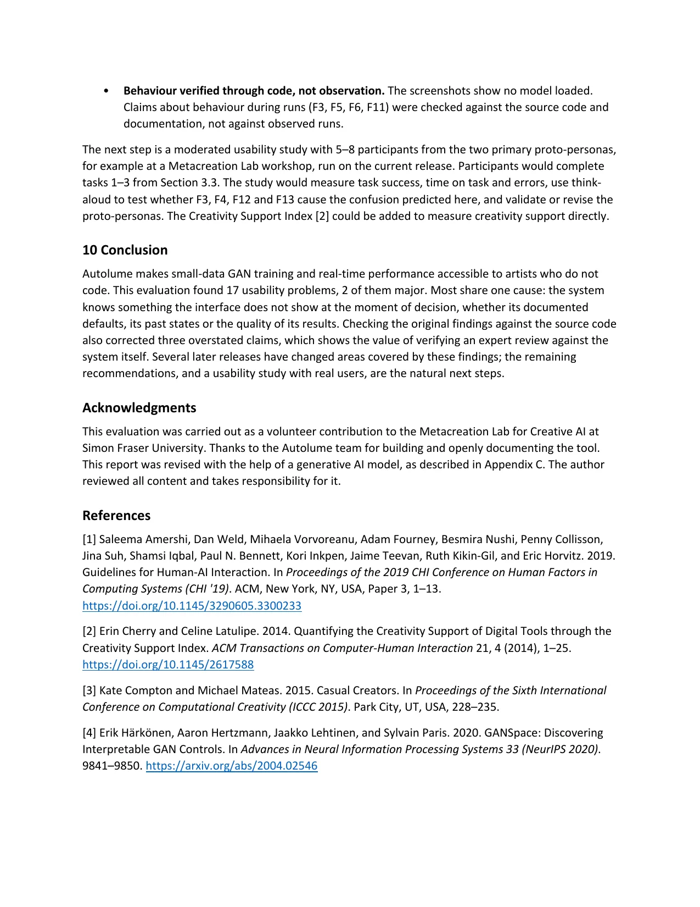
• Behaviour verified through code, not observation. The screenshots show no model loaded. Claims about behaviour during runs (F3, F5, F6, F11) were checked against the source code and documentation, not against observed runs. The next step is a moderated usability study with 5–8 participants from the two primary proto-personas, for example at a Metacreation Lab workshop, run on the current release. Participants would complete tasks 1–3 from Section 3.3. The study would measure task success, time on task and errors, use think- aloud to test whether F3, F4, F12 and F13 cause the confusion predicted here, and validate or revise the proto-personas. The Creativity Support Index [2] could be added to measure creativity support directly. 10 Conclusion Autolume makes small-data GAN training and real-time performance accessible to artists who do not code. This evaluation found 17 usability problems, 2 of them major. Most share one cause: the system knows something the interface does not show at the moment of decision, whether its documented defaults, its past states or the quality of its results. Checking the original findings against the source code also corrected three overstated claims, which shows the value of verifying an expert review against the system itself. Several later releases have changed areas covered by these findings; the remaining recommendations, and a usability study with real users, are the natural next steps. Acknowledgments This evaluation was carried out as a volunteer contribution to the Metacreation Lab for Creative AI at Simon Fraser University. Thanks to the Autolume team for building and openly documenting the tool. This report was revised with the help of a generative AI model, as described in Appendix C. The author reviewed all content and takes responsibility for it. References [1] Saleema Amershi, Dan Weld, Mihaela Vorvoreanu, Adam Fourney, Besmira Nushi, Penny Collisson, Jina Suh, Shamsi Iqbal, Paul N. Bennett, Kori Inkpen, Jaime Teevan, Ruth Kikin-Gil, and Eric Horvitz. 2019. Guidelines for Human-AI Interaction. In Proceedings of the 2019 CHI Conference on Human Factors in Computing Systems (CHI '19). ACM, New York, NY, USA, Paper 3, 1–13. https://doi.org/10.1145/3290605.3300233 [2] Erin Cherry and Celine Latulipe. 2014. Quantifying the Creativity Support of Digital Tools through the Creativity Support Index. ACM Transactions on Computer-Human Interaction 21, 4 (2014), 1–25. https://doi.org/10.1145/2617588 [3] Kate Compton and Michael Mateas. 2015. Casual Creators. In Proceedings of the Sixth International Conference on Computational Creativity (ICCC 2015). Park City, UT, USA, 228–235. [4] Erik Härkönen, Aaron Hertzmann, Jaakko Lehtinen, and Sylvain Paris. 2020. GANSpace: Discovering Interpretable GAN Controls. In Advances in Neural Information Processing Systems 33 (NeurIPS 2020). 9841–9850. https://arxiv.org/abs/2004.02546
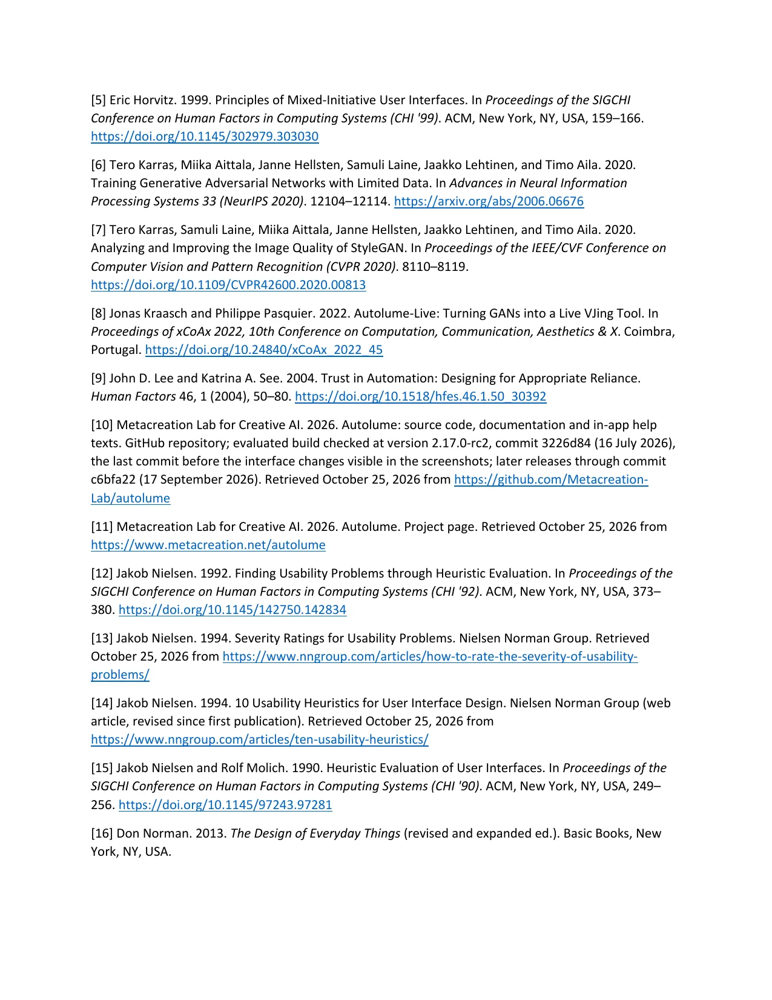
[5] Eric Horvitz. 1999. Principles of Mixed-Initiative User Interfaces. In Proceedings of the SIGCHI Conference on Human Factors in Computing Systems (CHI '99). ACM, New York, NY, USA, 159–166. https://doi.org/10.1145/302979.303030 [6] Tero Karras, Miika Aittala, Janne Hellsten, Samuli Laine, Jaakko Lehtinen, and Timo Aila. 2020. Training Generative Adversarial Networks with Limited Data. In Advances in Neural Information Processing Systems 33 (NeurIPS 2020). 12104–12114. https://arxiv.org/abs/2006.06676 [7] Tero Karras, Samuli Laine, Miika Aittala, Janne Hellsten, Jaakko Lehtinen, and Timo Aila. 2020. Analyzing and Improving the Image Quality of StyleGAN. In Proceedings of the IEEE/CVF Conference on Computer Vision and Pattern Recognition (CVPR 2020). 8110–8119. https://doi.org/10.1109/CVPR42600.2020.00813 [8] Jonas Kraasch and Philippe Pasquier. 2022. Autolume-Live: Turning GANs into a Live VJing Tool. In Proceedings of xCoAx 2022, 10th Conference on Computation, Communication, Aesthetics & X. Coimbra, Portugal. https://doi.org/10.24840/xCoAx_2022_45 [9] John D. Lee and Katrina A. See. 2004. Trust in Automation: Designing for Appropriate Reliance. Human Factors 46, 1 (2004), 50–80. https://doi.org/10.1518/hfes.46.1.50_30392 [10] Metacreation Lab for Creative AI. 2026. Autolume: source code, documentation and in-app help texts. GitHub repository; evaluated build checked at version 2.17.0-rc2, commit 3226d84 (16 July 2026), the last commit before the interface changes visible in the screenshots; later releases through commit c6bfa22 (17 September 2026). Retrieved October 25, 2026 from https://github.com/Metacreation- Lab/autolume [11] Metacreation Lab for Creative AI. 2026. Autolume. Project page. Retrieved October 25, 2026 from https://www.metacreation.net/autolume [12] Jakob Nielsen. 1992. Finding Usability Problems through Heuristic Evaluation. In Proceedings of the SIGCHI Conference on Human Factors in Computing Systems (CHI '92). ACM, New York, NY, USA, 373– 380. https://doi.org/10.1145/142750.142834 [13] Jakob Nielsen. 1994. Severity Ratings for Usability Problems. Nielsen Norman Group. Retrieved October 25, 2026 from https://www.nngroup.com/articles/how-to-rate-the-severity-of-usability- problems/ [14] Jakob Nielsen. 1994. 10 Usability Heuristics for User Interface Design. Nielsen Norman Group (web article, revised since first publication). Retrieved October 25, 2026 from https://www.nngroup.com/articles/ten-usability-heuristics/ [15] Jakob Nielsen and Rolf Molich. 1990. Heuristic Evaluation of User Interfaces. In Proceedings of the SIGCHI Conference on Human Factors in Computing Systems (CHI '90). ACM, New York, NY, USA, 249– 256. https://doi.org/10.1145/97243.97281 [16] Don Norman. 2013. The Design of Everyday Things (revised and expanded ed.). Basic Books, New York, NY, USA.
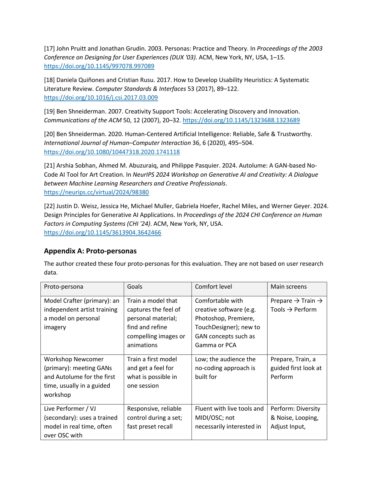
[17] John Pruitt and Jonathan Grudin. 2003. Personas: Practice and Theory. In Proceedings of the 2003 Conference on Designing for User Experiences (DUX '03). ACM, New York, NY, USA, 1–15. https://doi.org/10.1145/997078.997089 [18] Daniela Quiñones and Cristian Rusu. 2017. How to Develop Usability Heuristics: A Systematic Literature Review. Computer Standards & Interfaces 53 (2017), 89–122. https://doi.org/10.1016/j.csi.2017.03.009 [19] Ben Shneiderman. 2007. Creativity Support Tools: Accelerating Discovery and Innovation. Communications of the ACM 50, 12 (2007), 20–32. https://doi.org/10.1145/1323688.1323689 [20] Ben Shneiderman. 2020. Human-Centered Artificial Intelligence: Reliable, Safe & Trustworthy. International Journal of Human–Computer Interaction 36, 6 (2020), 495–504. https://doi.org/10.1080/10447318.2020.1741118 [21] Arshia Sobhan, Ahmed M. Abuzuraiq, and Philippe Pasquier. 2024. Autolume: A GAN-based No- Code AI Tool for Art Creation. In NeurIPS 2024 Workshop on Generative AI and Creativity: A Dialogue between Machine Learning Researchers and Creative Professionals. https://neurips.cc/virtual/2024/98380 [22] Justin D. Weisz, Jessica He, Michael Muller, Gabriela Hoefer, Rachel Miles, and Werner Geyer. 2024. Design Principles for Generative AI Applications. In Proceedings of the 2024 CHI Conference on Human Factors in Computing Systems (CHI '24). ACM, New York, NY, USA. https://doi.org/10.1145/3613904.3642466 Appendix A: Proto-personas The author created these four proto-personas for this evaluation. They are not based on user research data. Proto-persona Goals Comfort level Main screens Model Crafter (primary): an Train a model that Comfortable with Prepare → Train → independent artist training captures the feel of creative software (e.g. Tools → Perform a model on personal personal material; Photoshop, Premiere, imagery find and refine TouchDesigner); new to compelling images or GAN concepts such as animations Gamma or PCA Workshop Newcomer Train a first model Low; the audience the Prepare, Train, a (primary): meeting GANs and get a feel for no-coding approach is guided first look at and Autolume for the first what is possible in built for Perform time, usually in a guided one session workshop Live Performer / VJ Responsive, reliable Fluent with live tools and Perform: Diversity (secondary): uses a trained control during a set; MIDI/OSC; not & Noise, Looping, model in real time, often fast preset recall necessarily interested in Adjust Input, over OSC with
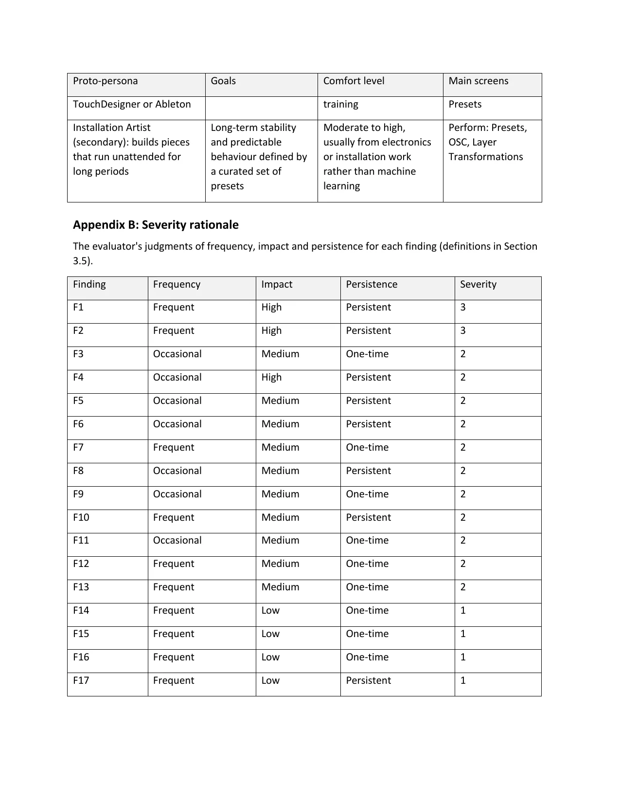
Proto-persona Goals Comfort level Main screens TouchDesigner or Ableton training Presets Installation Artist Long-term stability Moderate to high, Perform: Presets, (secondary): builds pieces and predictable usually from electronics OSC, Layer that run unattended for behaviour defined by or installation work Transformations long periods a curated set of rather than machine presets learning Appendix B: Severity rationale The evaluator's judgments of frequency, impact and persistence for each finding (definitions in Section 3.5). Finding Frequency Impact Persistence Severity F1 Frequent High Persistent 3 F2 Frequent High Persistent 3 F3 Occasional Medium One-time 2 F4 Occasional High Persistent 2 F5 Occasional Medium Persistent 2 F6 Occasional Medium Persistent 2 F7 Frequent Medium One-time 2 F8 Occasional Medium Persistent 2 F9 Occasional Medium One-time 2 F10 Frequent Medium Persistent 2 F11 Occasional Medium One-time 2 F12 Frequent Medium One-time 2 F13 Frequent Medium One-time 2 F14 Frequent Low One-time 1 F15 Frequent Low One-time 1 F16 Frequent Low One-time 1 F17 Frequent Low Persistent 1
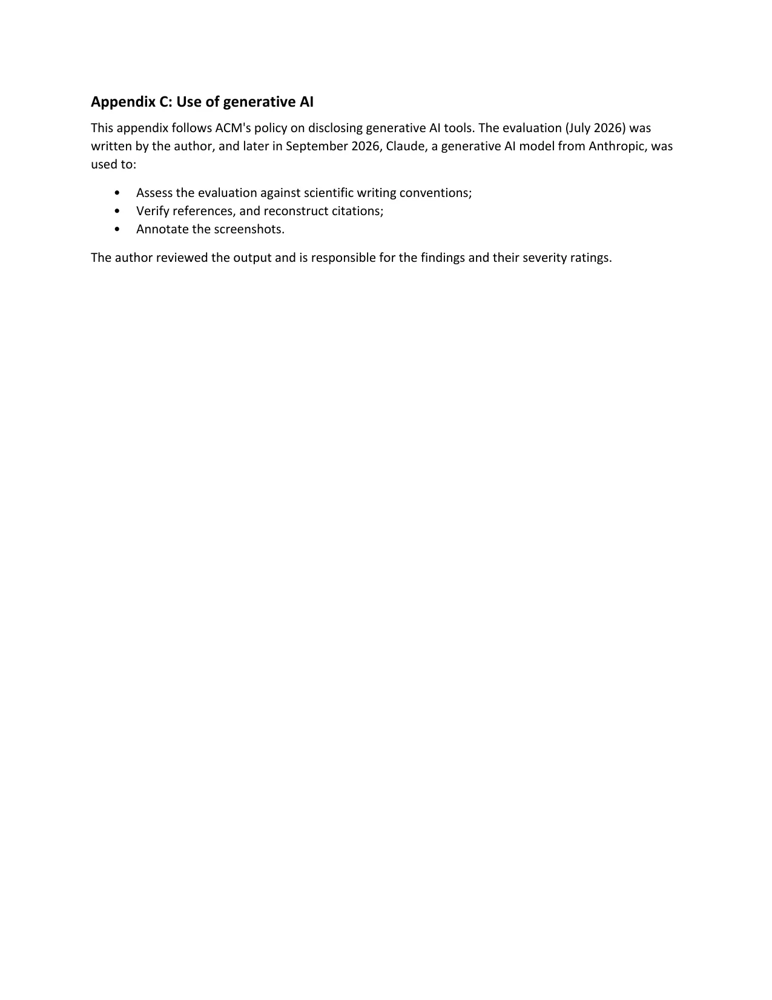
Appendix C: Use of generative AI This appendix follows ACM's policy on disclosing generative AI tools. The evaluation (July 2026) was written by the author, and later in September 2026, Claude, a generative AI model from Anthropic, was used to: • Assess the evaluation against scientific writing conventions; • Verify references, and reconstruct citations; • Annotate the screenshots. The author reviewed the output and is responsible for the findings and their severity ratings.